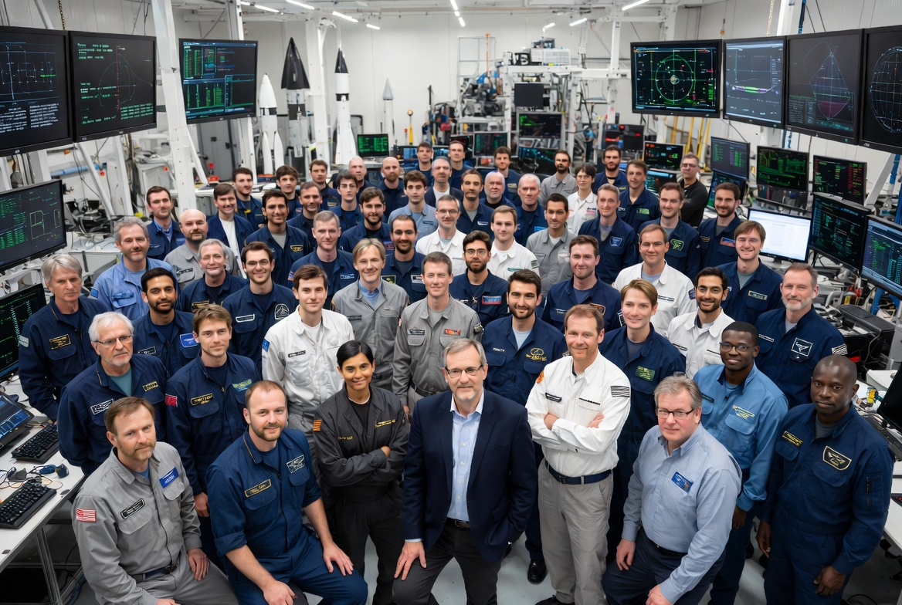
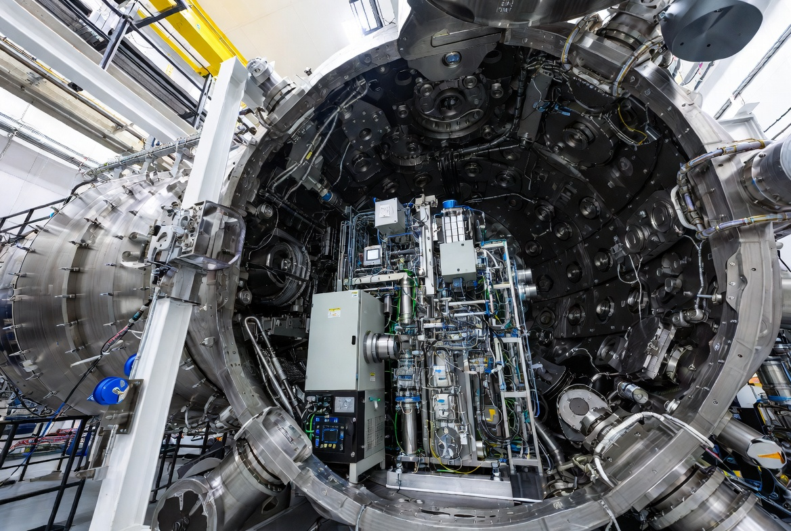
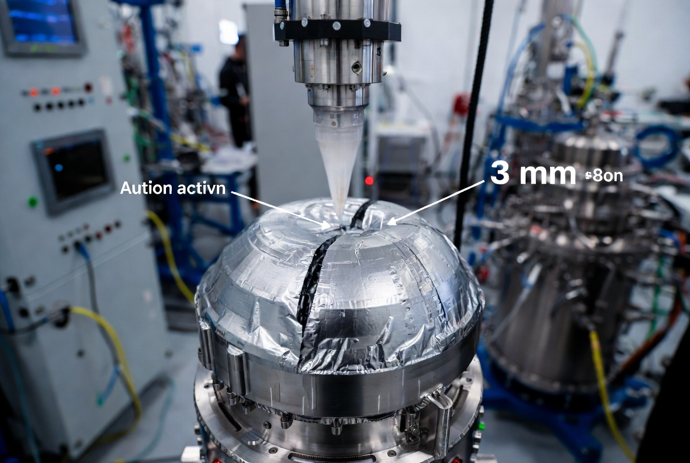

Investigación y Desarrollo
En Nova Aerospace no solo construimos naves: diseñamos el futuro. Nuestro centro de investigación trabaja incansablemente para superar las barreras de la física moderna y convertir lo imposible en tecnología operativa.

Nuestro Equipo
Más de 50 ingenieros aeroespaciales, astrofísicos cuánticos y ex-pilotos de pruebas de 10 nacionalidades distintas. Nuestra filosofía se basa en el rigor científico y la colaboración multidisciplinar.

Instalaciones de Prueba
Disponemos de la cámara de vacío térmico más grande del sector privado, con capacidad de simular temperaturas de -270°C a +300°C y presiones de hasta 10⁻⁹ mbar.

Materiales Inteligentes
Desarrollo de polímeros auto-reparables para el casco de nuestras estaciones espaciales. El compuesto sella fisuras de hasta 3mm de forma autónoma en menos de 80 milisegundos.
Nuestros logros
Nacimiento de Nova Aerospace
El equipo fundador de 12 personas establece el primer laboratorio en Madrid con financiación semilla de 8M€. Objetivo: democratizar el acceso al espacio.
Propulsor Iónico Vesta v1
Primera versión del propulsor iónico certificada para uso en satélites comerciales. Reducción del 40% en consumo de combustible frente a motores convencionales.
Centro de I+D & Cámara de Vacío
Inauguración del centro de investigación de 12.000 m² en Tres Cantos. La cámara de vacío térmico supone la instalación privada más avanzada de Europa.
Lanzamiento del Rover 'Crimson'
El Rover Crimson aterriza exitosamente en el cráter Jezero. En sus primeras 72 horas envía más de 4.000 imágenes de alta resolución y detecta indicios de agua subterránea.
Polímero Auto-Reparable Certificado
El compuesto inteligente desarrollado en nuestros laboratorios recibe la certificación ESA para su uso en cascos de estaciones espaciales habitadas.
Primera Colonia Lunar Permanente
Proyecto en fase avanzada de desarrollo. Los Módulos Habitables Lunares serán desplegados por equipos autónomos en la cuenca Aitken del polo sur lunar.